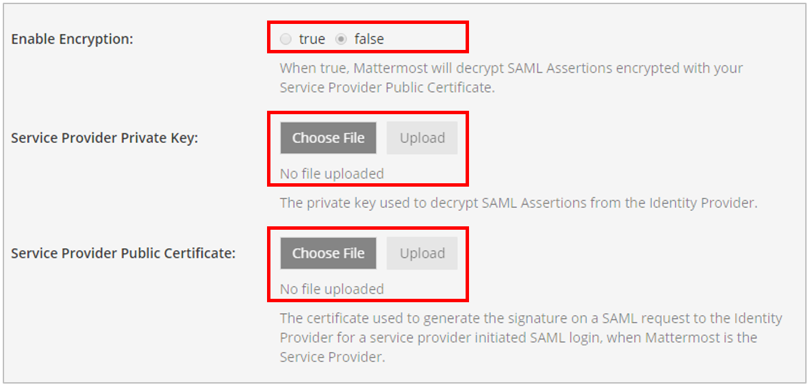

Configure SAML with OneLogin¶
The following process provides steps to configure SAML with OneLogin for Mattermost.
Before you begin¶
Before you configure SAML:
- Make sure you have the XML Security Library installed on your Mattermost instance. The XML Security Library is usually included as part of Debian GNU/Linux.
- Install the xmlsec1-openssl library
- On Ubuntu:
sudo apt-get install libxmlsec1-openssl- On RHEL:
sudo yum install xmlsec1-openssl
- Generate encryption certificates for encrypting the SAML connection.
- You can use the Bash script from the mattermost/docs repository on GitHub, or any other suitable method.
- Save the two files that are generated. They are the private key and the public key. In the System Console, they are referred to as the Service Provider Private Key and the Service Provider Public Certificate respectively.
Create a OneLogin connection app for Mattermost SSO¶
- Add a SAML test connector app.
- Sign into OneLogin as an administrator.
- Go to Apps > Add Apps.
- Search for “SAML Test Connector” and choose SAML Test Connector (IdP) w/encrypt.
- In the Display Name field, enter a name for the application, and optionally upload an app icon. You can use the Mattermost logo for the icon, which you can download from Branding Guidelines page.

- Make sure that the Visible in portal option is enabled.
- Click Save.
- Configure the app.
- Click the Configuration tab and enter the following values:
- Recipient:
https://<your-mattermost-url>/login/sso/saml- ACS (Consumer) URL:
https://<your-mattermost-url>/login/sso/saml- ACS (Consumer) URL Validator:
https:\/\/<your-mattermost-url>\/login\/sso\/saml
- Paste the Public Key that you generated earlier into the SAML Encryption field.
- Click Save.
- Enter the attribute parameters.
Attribute parameters map attributes between OneLogin and Mattermost. For more information on which attributes are configurable, see our documentation on SAML configuration settings.
Email and Username attributes are required. For Mattermost servers running version 3.3 and earlier, FirstName and LastName attributes are also required.
- Click the Parameters tab.
- Click Add Parameter.
- In the Field name field, enter an attribute parameter such as
- Select the Include in SAML assertion checkbox.
- Click Save
- Click Edit.
- In the Value field, select the OneLogin value that corresponds to the attribute parameter.
- Repeat steps b through g to add the Username attribute and any other attributes that you need.
After you’ve added all the attributes you want to use, the parameter list should look similar to the following image:
- Copy the SSO information.
- Click the SSO tab.
- Copy the values in the Issuer URL and SAML 2.0 Endpoint (HTTP) fields and save them for use later.
- Click View Details to view the X.509 certificate.
- Make sure that the X.509 PEM option is selected in the drop-down.
- Click DOWNLOAD and save the file in a convenient location for use later.
- Save all your changes.
Configure SAML for Mattermost¶
- Sign into Mattermost as a System Administrator.
- Go to System Console > Authentication > SAML.
- In the SAML SSO URL field, paste the value for the OneLogin SAML 2.0 Endpoint (HTTP) that you copied earlier.
- In the Identity Provider Issuer URL field, paste the value for the OneLogin Issuer URL that you copied earlier.
- In the Identity Provider Public Certificate field, upload the OneLogin X.509 PEM certificate file that you downloaded earlier.

- Configure Mattermost to verify the signature.
- In the Verify Signature field, click True.
- In the Service Provider Login URL, enter
https//<your-mattermost-url>/login/sso/saml
- Enable encryption.

- In the Enable Encryption field, click True.
- In the Service Provider Private Key field, upload the private key that you generated earlier.
- In the Service Provider Public Certificate field, upload the public key that you generated earlier.
- Set attributes for the SAML Assertions, which are used for updating user information in Mattermost.
The Email Atttribute field and the Username Attribute field are required, and should match the values that you entered earlier when you configured the SAML Test Connector on OneLogin.
For Mattermost servers running version 3.3 and earlier, FirstName and LastName attributes are also required.

- (Optional) Customize the login button text.
- Click Save.
- (Optional) If you configured First Name Attribute and Last Name Attribute, go to System Console > General > Users and Teams and set Teammate Name Display to Show first and last name. This is recommended for a better user experience.
To confirm that SAML SSO is successfully enabled, switch your System Administrator account from email to SAML-based authentication via Account Settings > General > Sign-in Method > Switch to SAML SSO and sign in with your SAML credentials to complete the switch.
It is also recommended to post an announcement about how the migration will work to users.
You can also configure SAML for OneLogin by editing config.json to enable SAML based on SAML configuration settings. You must restart the Mattermost server for the changes to take effect.
Troubleshooting¶
The following are troubleshooting suggestions on common error messages and issues.
- System Administrator locks themselves out of the system
If the System Administrator is locked out of the system during SAML configuration process, they can set an existing account to System Administrator using a command line tool.
- Received error message: An account with that username already exists. Please contact your Administrator.
This usually means an existing account has another authentication method enabled. If so, the user should sign in using that method (such as email and password), then change their sign-in method to SAML via Account Settings > Security > Sign-in method.
This error message can also be received if the Username Attribute of their SAML credentials doesn’t match the username of their Mattermost account. If so, the user can update the attribute at their identity provider (for instance, back to the old value if it had been previously updated).
- Received error message: An account with that email already exists. Please contact your Administrator.
This usually means an existing account has another authentication method enabled. If so, the user should sign in using that method (such as email and password), then change their sign-in method to SAML via Account Settings > Security > Sign-in method.
This error message can also be received if the Email Attribute of their SAML credentials doesn’t match the email address of their Mattermost account. If so, the user can update the attribute at their identity provider (for instance, back to the old value if it had been previously updated).
- Received error message: SAML login was unsuccessful because one of the attributes is incorrect. Please contact your System Administrator.
Confirm all attributes, including Email Attribute and Username Attribute, are correct in both the Identity Provider configuration and in System Console > SAML.
- Unable to switch to SAML authentication successfully
First, ensure you have installed the XML Security Library on your Mattermost instance and that it is available in your PATH.
Second, ensure you have completed each step of the SAML configuration.
If you are still having trouble with configuration, feel free to post in our Troubleshooting forum and we’ll be happy to help with issues during setup.